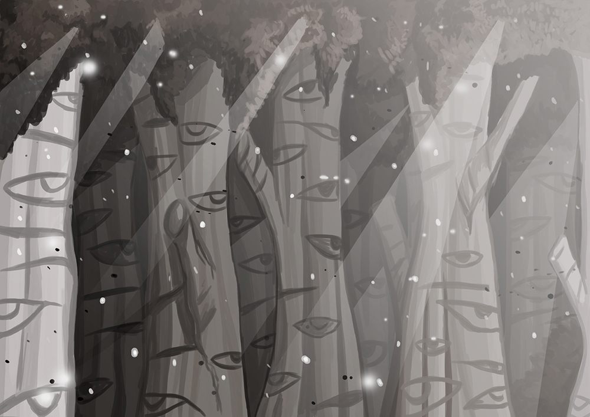

PASSION PROJECT
END OF THE APOCALYPSE
ONTWIKKELFASE
INTRODUCTIE
Ik zou graag verschillende Frontend technieken willen laten zien wat ik heb geleerd door middel van tutorials op het internet. Hoewel niet alles al af is, wil ik toch al graag mijn progressie delen.
Preloader
GELUIDSEFFECTEN
Zoals je op de afbeelding naast deze tekst kunt zien, heb ik de kraai afgebeeld terwijl hij geluid maakt. In een gedrukte versie van het verhaal zou je simpelweg vermelden dat de kraai kraait. Echter, met behulp van geluidseffecten kun je op een bijzondere manier diepte aan je verhaal toevoegen. Ik heb een website op internet gevonden die gratis en royaltyvrije geluidseffecten aanbiedt, en daar vond ik geluiden van kraaien.Soundeffect site
MUZIEK
Ik wil graag muziek gebruiken in het verhaal, omdat het zoveel meer leven brengt.GELUIDSEFFECTEN
Zoals je op de afbeelding naast deze tekst kunt zien, heb ik de kraai afgebeeld terwijl hij geluid maakt. In een gedrukte versie van het verhaal zou je simpelweg vermelden dat de kraai kraait. Echter, met behulp van geluidseffecten kun je op een bijzondere manier diepte aan je verhaal toevoegen. Ik heb een website op internet gevonden die gratis en royaltyvrije geluidseffecten aanbiedt, en daar vond ik geluiden van kraaien.Soundeffect site
MUZIEK
Maar ik wil ook graag achtergrondmuziek in de comic hebben, die elke keer als je bij een ander stuk van het verhaal bent overgaat in andere muziek. Eerst wist ik niet zo goed hoe dit heette en heb Luuk uitgelegd wat ik zocht. Hij is voor mij gaan zoeken en kwam dit tegen.Code
Dit kreeg ik niet werkend, waarschijnlijk omdat ik niet genoeg ervaring met de verschillende componenten heb.
Maar nu wist ik wel waar ik op moest zoeken en ben ik zelf deze tutorial
tegengekomen.
youtubepagina hoe het werkt.
Github
Nu moet ik het alleen nog toepassen in de comic zelf.
youtubepagina hoe het werkt.
Github
Nu moet ik het alleen nog toepassen in de comic zelf.
PARALLAX FOREST
Voor de parallax bos heb ik eerst gebruikt gemaakt met alleen gebruikt gemaakt met CSS. Ik wilde eigenlijk geen javascript gebruiken, maar dat bleek later onmogelijk.Mijn eerste parallax was met Z-index en met de Z as die dan de verschillende snelheden kan bepalen.
De parallax die met alleen Z- index wordt gemaakt, maar niet alleen gebruik van de X en Y as, maar ook met de Z- as die dan naar achteren loopt.
Alleen het probleem met dit is, is dat hij dan ook de PNG’s die ingeladen worden op verschillende hoogste zet in
de Z- as en dat kun je niet gebruiken op een scroller.
Dus ik moest toen wel een parallax gebruiken met Javascript en ik heb er 1 gevonden.
Zie hier tutorial
Deze heeft een parallax in vertical, maar ook 1 in horizontal. Die code heb ik gepakt, alle png’s ingeladen, en met verschillende snelheden gecodeerd.

Zie hier tutorial
Deze heeft een parallax in vertical, maar ook 1 in horizontal. Die code heb ik gepakt, alle png’s ingeladen, en met verschillende snelheden gecodeerd.
ILLUSTRATIES GEMAAKT VIA CODERING
Burning Sun
De zon heb ik gecodeerd door code pens op te zoeken van zonnen, of in ieder geval van cirkels. Die heb ik inderdaad gevonden.Codepen
Deze is gemaakt door mgKOVDeze heb ik weer vermaakt met de componenten die ik zelf nodig.
Ik heb de stralen van de zon niet nodig, dus die heb ik weggehaald, maar de
gradient die achter de zon zit, heb ik wel gebruikt.
Ik heb deze methode gebruikt, omdat dit een makkelijke vorm is om te coderen en bijna tot niet laadtijd geeft.